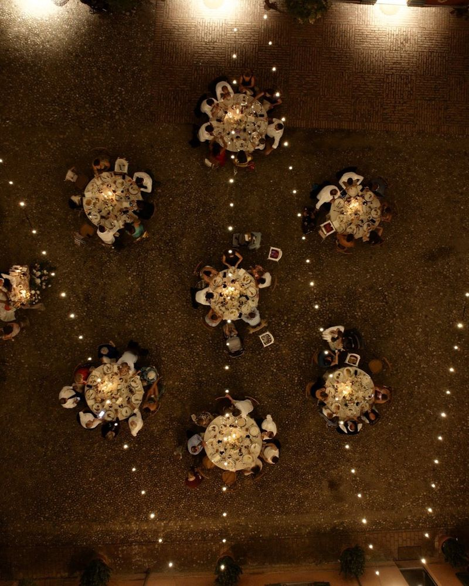

Tenuta Pizzone · Allenamento alla chiusura
Primo passo
Con chi ti alleni
Secondo passo
Quanto deve essere dura
Due obiezioni, più una che non ti dice finché non fai la domanda giusta. Quando è pronta te lo fa capire.
Terzo passo
Come parlate
Con le cuffie o in una stanza tranquilla. Il telefono ti chiederà il microfono.
IA È una simulazione: voce e risposte sono generate da un'intelligenza artificiale, non c'è nessuna persona dall'altra parte. Per chiudere prima, di' «stop, pagella».
Il canovaccio della chiusura
Cosa non dire e non promettere
Non è ancora deciso, quindi non si promette:
Ripassa la scheda prima di iniziare
I tuoi allenamenti